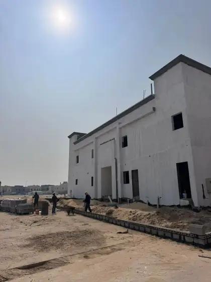

يمكن أن يكون لدى المشروع مخططات جيدة وفريق قادر، ثم يفقد أيامًا لأن اعتماد مادة تأخر، أو لأن فتحة لم تُنسق، أو لأن الصبة جُهزت قبل تأكيد المختبر والمضخة. خطة تنفيذ بناء العظم بالرياض تمنع هذا النوع من التأخير عبر تحويل البرنامج إلى سلسلة قرارات واستلامات، لا شريط تواريخ جميل على الورق.
الهدف ليس ضغط المدة بأي ثمن، بل كشف ما يجب أن يحدث قبل كل انتقال: ما المستند المعتمد؟ ما الموارد؟ ما الفحص؟ ما العمل الذي سيصبح مخفيًا؟ ومن يملك قرار السماح بالاستمرار؟ عندما تُجاب هذه الأسئلة مبكرًا تصبح المتابعة الأسبوعية أداة توقع لا سجلًا للماضي.
لفهم حدود المرحلة أولًا راجع دليل بناء عظم بالرياض. وإذا كنت في مرحلة التعاقد، اربط الخطة ببنود عقد بناء العظم حتى يكون البرنامج والتغيير والاستلام جزءًا من الالتزام.
1. حوّل النطاق إلى هيكل أنشطة ومعالم
ابدأ بتقسيم النطاق إلى مناطق وحزم: تجهيز الموقع، الحفر، التأسيس، الردم، الهيكل لكل دور، السلالم، المباني، العزل، الخزانات والسور والتأسيسات بحسب العقد. ثم ضع معالم يمكن التحقق منها مثل استلام الحفر أو جاهزية قاعدة للصبة أو إكمال سقف دور، بدل نسب عامة لا توضح ما أنجز.
لكل نشاط سجل السابقة واللاحقة. لا يبدأ التسليح قبل اعتماد المستند وتجهيز الشدة، ولا يبدأ الردم قبل استلام الأعمال التي ستُغطى. هذه العلاقات تكشف المسار الحرج الحقيقي وتمنع تشغيل فرق في جبهة غير جاهزة لمجرد إبقاء الموقع مزدحمًا.
حزمة
جزء من النطاق له بداية ونهاية ومسؤولية واضحة.
نشاط
عمل له مدة وموارد ومدخلات ومخرج قابل للفحص.
معلم
نقطة إنجاز أو اعتماد يمكن ربطها بالمتابعة أو الدفعة.
2. أنشئ سجل جاهزية قبل بدء كل مرحلة
قبل الحفر أو القواعد أو أي سقف، اسأل عن خمسة أنواع من الجاهزية: المستند، الموقع، المادة، المورد، والفحص. قد يكون فريق الحديد جاهزًا لكن المخطط المعدل لم يعتمد؛ أو تكون الشدة مكتملة لكن فتحات الخدمات لم تراجع. سجل الجاهزية يجعل العائق مرئيًا قبل أن يصل النشاط إلى يوم التنفيذ.
حدّث السجل في اجتماع قصير متكرر، وحدد مسؤولًا وتاريخًا مطلوبًا لكل عائق. لا تستخدم عبارة «قيد المتابعة» بلا صاحب قرار. وإذا كان التأخير سيؤثر على المسار الحرج، أظهر بديل التسلسل والأثر بدل إخفائه داخل نسبة تقدم.
3. اربط التوريد والموارد بالبرنامج الأسبوعي
لا يكفي أن يظهر النشاط في البرنامج؛ يجب أن تظهر المواد والقوالب والمعدات والعمالة التي تجعله ممكنًا. أنشئ نظرة لأسابيع مقبلة توضح ما سيعتمد ويطلب ويصل ويُفحص، مع مساحة التخزين وطريقة الرفع أو الضخ. في المواقع محدودة الحركة، يصبح توقيت الشحنة جزءًا من خطة الإنتاج.
راجع إنتاجية الفريق الفعلية بدل الاعتماد على معدل افتراضي من مشروع آخر. إذا انخفضت، حدّد السبب: جبهة غير جاهزة، نقص مورد، ازدحام تخصصات، إعادة عمل، أو قرار متأخر. عالج السبب قبل زيادة العمالة؛ فالموقع غير المنظم قد يصبح أبطأ كلما زاد عدد الأشخاص داخله.
- اعتمادات المواد قبل تاريخ الطلب بمدة تسمح بالمراجعة والتوريد.
- خطة قوالب ومعدات تتوافق مع تسلسل الأدوار والجبهات.
- تأكيد الموردين والخدمات المرتبطة بالصبة قبل الموعد.
- مقارنة الإنتاج المخطط والفعلي وسبب الفارق وإجراء التصحيح.
4. اعقد مراجعة جاهزية قبل كل صبة
مراجعة الصبة ليست نظرة أخيرة على الحديد؛ هي بوابة انتقال. تأكد من إصدار المخطط، والأبعاد والمناسيب، والشدات والدعم، والتسليح، والفتحات والسليفات والأجزاء المدفونة، وإغلاق الملاحظات، وجاهزية الخرسانة والضخ والاختبار والعمالة والحماية والمعالجة بحسب مستندات المشروع.
حدد من يملك قرار الجاهزية، وسجل النتيجة والوقت والملاحظات. إذا بقي بند مفتوحًا، لا تحوله إلى وعد شفهي بعد الصب. استخدم قائمة فحص جودة بناء العظم لتوسيع نقاط المراجعة، مع التزام متطلبات المهندس والمخططات والمواصفات الفعلية.
5. ضع نقاط توقف للردم والمباني والأعمال المخفية
الصب ليس نقطة التوقف الوحيدة. قبل الردم راجع الأعمال التي ستختفي والعزل والاختبارات والحماية والمواد وطريقة التنفيذ وفق النطاق. وقبل المباني راجع المحاور والمناسيب والفتحات والربط. وقبل إغلاق أي مسار، نسّق الكهرباء والسباكة والتكييف وصور ما سيصبح غير مرئي.
اجعل كل نقطة توقف مرتبطة بقائمة محددة لا بتوقيع عام. بعض البنود يحتاج حضور أكثر من تخصص، لذلك يجب أن يظهر موعده في نظرة الأسابيع المقبلة حتى لا تستدعي الأطراف بعد اكتمال العمل وتعرض البرنامج للتوقف أو الإعادة.
قبل الردم
استلام الأعمال المخفية والحماية والاختبارات المطلوبة.
قبل المباني
محاور ومناسيب وفتحات وربط وتسلسل مع الخدمات.
قبل الإغلاق
اختبار وتصوير واعتماد للمسارات والعناصر المخفية.
6. أدر التغييرات كجزء من البرنامج لا كمرفق مالي
التغيير يؤثر في أكثر من السعر: قد يعيد اعتماد مخطط أو يوقف توريدًا أو يغير تسلسل فريقين. عند استلام طلب تغيير، سجل وصفه وسببه والمستندات المتأثرة والأنشطة التي قد تتوقف وموعد القرار المطلوب، ثم قيّم الكلفة والمدة قبل التنفيذ وفق العقد.
اعرض القرارات المفتوحة في التقرير الأسبوعي مرتبة بحسب تاريخ الحاجة والأثر. إذا لم يصدر القرار، حدّث توقع الإنجاز واذكر البدائل الممكنة. بهذه الشفافية يستطيع المالك الاختيار بين الوقت والكلفة والنطاق قبل أن تصبح النتيجة أمرًا واقعًا.
- رقم وسبب ووصف ومستندات متأثرة لكل تغيير.
- تكلفة ومدة وتسلسل وموارد قبل الاعتماد.
- تاريخ قرار مطلوب ومسؤول واضح عن الرد.
- تحديث البرنامج والقيمة وسجل المخططات بعد الاعتماد.
7. اجعل التقرير الأسبوعي لوحة قرار
التقرير المفيد يجيب عن: ماذا كان مخططًا؟ ماذا نُفذ؟ لماذا يوجد فرق؟ ما الذي سيحدث خلال الأسابيع المقبلة؟ وما القرارات أو الاعتمادات التي نحتاجها الآن؟ أرفق صورًا مرتبطة بالموقع والبند، وسجل الفحوصات والملاحظات والتغييرات والمواد الحرجة والسلامة بحسب نظام المشروع.
تجنب نسبة تقدم واحدة لا تشرح مصدرها. استخدم تقدمًا لكل حزمة أو معلم، واربطه بكميات أو أنشطة قابلة للتحقق. عندما يظهر الانحراف مبكرًا، ضع إجراء تصحيح ومسؤولًا وموعدًا، ثم راجع أثر الإجراء في التقرير التالي.
8. أغلق مرحلة العظم بحزمة تسليم لا بجولة أخيرة
قبل الانتقال إلى التأسيسات أو التشطيبات، اجمع قوائم الاستلام ونتائج الاختبارات وسجل المواد والتغييرات والمخططات المحدثة المتاحة وقائمة الملاحظات. راجع المحاور والمناسيب والفتحات والأعمال المتبقية وحدود مسؤولية كل جهة في المرحلة التالية.
استخدم جولة التسليم للتحقق من إغلاق السجل، لا لبدء اكتشافه. ويمكن ربط الدروس المستفادة بخطة المرحلة القادمة: ما الاعتمادات التي تأخرت؟ أين ظهرت إعادة العمل؟ وكيف سيتغير التنسيق؟ ولرؤية مثال منشور لمشروع متعدد المكونات راجع مشروع مسجد وفللتين بحي العروبة، ثم ناقش كيف تُطبق الخطة على نطاق مشروعك.
سجلات
فحوصات واختبارات ومواد وتغييرات وإصدارات مستندات.
حالة الموقع
ملاحظات وأعمال متبقية وحماية وتسليم للفرق التالية.
تعلم
أسباب الانحراف وإجراءات تمنع تكرارها في المراحل القادمة.
تريد برنامجًا أوليًا لنطاق بناء العظم؟
أرسل المخططات وموقع المشروع والموعد المستهدف لنناقش الحزم والمدخلات التي يحتاجها التخطيط.
طلب استشارة أو عرض سعرالخلاصة
خطة تنفيذ بناء العظم بالرياض تصبح مفيدة عندما تربط النشاط بالمستند والموارد والتوريد والفحص والقرار. هيكل الأنشطة وسجل الجاهزية ونظرة الأسابيع المقبلة واجتماع الصبة ونقاط التوقف والتقرير الأسبوعي وحزمة التسليم تجعل الانحراف ظاهرًا مبكرًا، وتمنح الفريق فرصة للتصحيح قبل أن يتحول التأخير أو إعادة العمل إلى نتيجة نهائية.
تابع أدلة بناء العظم
انتقل إلى الدليل المحوري أو الأدلة المرتبطة، ثم إلى الخدمة عندما تصبح جاهزًا للتنفيذ.